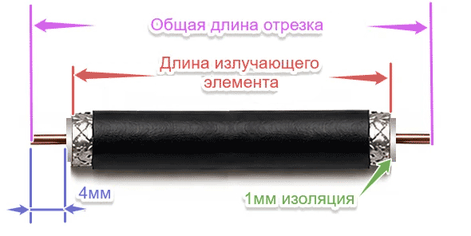
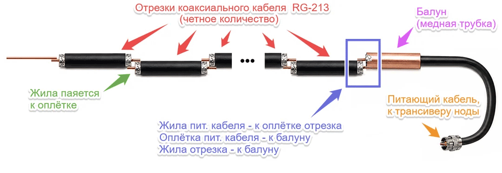
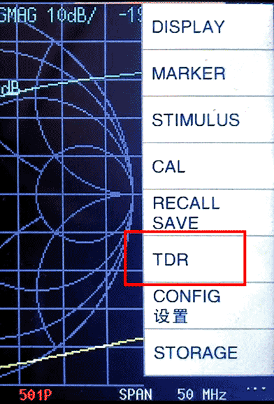
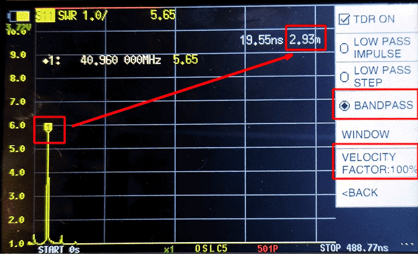

Калькулятор коллинеарной антенны из кабеля
Активный элемент антенны

Конструкция антенны
Антенна собрана из одинаковых отрезков коаксиального кабеля, соединённых последовательно по схеме «жила–оплётка».
Каждый участок оплётки фактически работает как отдельный излучающий / принимающий элемент. В результате все сегменты работают совместно, складываясь и обеспечивая усиление антенны.

Измерение velocity factor кабеля с помощью NanoVNA
Коэффициент укорочения (velocity factor) показывает, насколько медленнее сигнал распространяется внутри кабеля. Из-за этого физическая длина отрезков не равна их электрической длине, и это напрямую влияет на резонанс антенны.
- Выставляем на NanoVNA рабочий диапазон частот с небольшим запасом - процентов по 20 в обе стороны. Наш диапазон для Meshtastic - порядка 868 МГц, следовательно диапазон для калибровки - примерно от 780 до 950 МГц
- Проводим стандартную калибровку - OPEN / SHORT / LOAD
- Берем наш пока еще не разрезанный кабель и как можно более точно измеряем его длину. Желательно, чтобы она составляла метр-два и более, так будет точнее.
- Подключаем кабель к NanoVNA. Я подпаивал к одному из концов кабеля разъем, чтобы подключить его к прибору. Второй конец кабеля - разомкнутый.
- На приборе включаем отображение TDR в главном меню:

- В меню TDR выставляем VELOCITY FACTOR равный 100%, режим - BANDPASS и ищем пик на графике, и в верхнем правом углу видим измеренное значение длины кабеля в метрах:

- Теперь дело за малым - делим реальную длину кабеля на измеренное NanoVNA значение - и получаем искомое значение Velocity Factor. Например, реальная длина кабеля 1.97 метра, измеренное значение на скриншоте выше: 2.93, следовательно, velocity factor булдет равен 1.94 / 2.93 = 0.66.